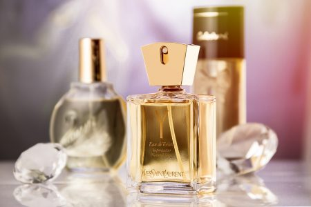

Home

Menurut Wikipedia, Parfum atau minyak wangi adalah campuran minyak esensial dan senyawa aroma, fiksatif, dan pelarut yang digunakan untuk memberikan bau wangi untuk tubuh manusia, objek, atau ruangan. Parfum menjadi hal penting untuk wanita maupun pria. Parfum digunakan bukan hanya untuk menghilangkan bau tapi juga bisa menambah kepercayaan diri, membuat kepuasan hati dan membuat penilaian diri menjadi lebih menarik. Selain itu, parfum dapat membawa kita kembali ke dalam sebuah kenangan tentang tempat, waktu maupun terhadap seseorang
Jenis-Jenis Parfum dan Kadar Konsentratnya
Jenis-jenis parfum terbagi berdasarkan kadar konsentratnya. Hal ini pula yang mempengaruhi kualitas serta harga parfum. Berikut jenis parfum yang diurutkan dari kadar konsentrat yang paling rendah.
Body mist
Body mist lebih cocok digunakan untuk aktivitas sehari-hari. Namun, body mist memiliki kandungan essential oil lebih sedikit yaitu hanya 2-4% serta lebih banyak mengandung air dan alkohol. Wanginya pun hanya bisa bertahan hingga 1 jam.
Eau de Cologne
Cologne hanya mengandung 5-7% konsentrat bahan wewangian. Aroma lebih cepat menguap jadi hanya bisa bertahan sekitar 2-3 jam. Harganya relatif lebih murah karena lebih banyak kandungan air dan alkohol dibandingkan essential oil yang terdapat di dalamnya.
Eau de Toillete
Eau de toilette terkenal dengan wanginya yang segar, lebih lembut dan ringan. Konsentrat yang terkandung di dalamnya hanya sekitar 10-15% dengan campuran alkohol yang cukup tinggi. Umumnya jenis parfum ini muncul dengan model spray, dan aromanya hanya bertahan pada kisaran waktu 3-4 jam saja. EDT lebih cocok digunakan untuk sehari-hari.
Eau de Parfum
Menurut sejarah eau de parfum bersifat genderless, sehingga bisa menggambarkan wewangian pria dan wanita. EDP memiliki kadar konsentrat essential oil sebanyak 15-20%, hal ini membuat wanginya tidak mudah hilang sampai 6 jam. Faktor inilah yang membuat EDP dibanderol lebih mahal dibandingkan jenis parfum lain.
Parfum
Parfume yang memiliki konsentrat tinggi dan halus diantara golongan wewangian yang lainnya. Kandungan essential oilnya juga yang paling kuat karena terdiri dari 20-40% essential oil atau konsentrat bahan wewangian. Oleh karena itu, jenis minyak wangi dengan jenis Parfume biasanya tahan lama hingga 6-8 jam, wanginya juga tidak cepat menguap, dan yang pasti mahal harganya.
SPL(Sillage, Projection, Longevity)
SPL (Sillage, Projection, Longevity) adalah istilah yang digunakan pada dunia wewangian untuk menentukan kualitas sebuah parfum. Terkadang ada parfum yang ringan tapi tidak tahan lama, tapi ada pula parfum yang tahan lama tapi aromanya membuat pusing. Berikut adalah penjelasannnya.
Sillage
Dalam dunia parfum, sillage mendefinisikan bagaimana dan berapa lama ketahanan aroma wewangian menyebar di sekitar pemakainya. Parfum dengan sillage yang kuat artinya parfum tersebut mampu memproyeksikan aroma wangi dengan baik dan menyebarkan area yang lebih luas di sekitar pengguna serta meninggalkan jejak aroma yang lebih lama.
- Soft
- Moderate
- Heavy
- Enormous
Projection
Projection bisa diartikan seberapa jauh aroma wangi yang memancar dari kulit kamu dan bagaimana wangi tersebut bisa dirasakan oleh orang lain di area yang sama denganmu. Projection dapat dikaitkan dengan radius.
Longevity
Bisa diartikan berapa lama aroma parfum bertahan di kulit atau pakaian kamu meski aromanya sudah tak tercium lagi oleh orang di sekitar. Projeksi dapat dikaitkan dengan durasi. Parfum yang berkualitas biasanya memiliki ketahanan hingga keesokan hari bahkan sampai pakaian dicuci. Projection memiliki tingkatan:
- Poor
- Weak
- Moderate
- Long Lasting
- Very Long Lasting
Notes
Mungkin kamu tidak pernah menyadari bahwa ternyata parfum itu dirancang dengan berbagai aroma tahapan yang akan muncul bergantian seiring waktu pemakaian. Berikut adalah tahapan aroma parfum yang akan akan terhirup di hidung Anda.
Top Notes
Top notes menjadi impresi pertama yang siap menyapa Anda masuk dalam nuansa yang disediakan oleh parfum tersebut. Pada umumnya top notes bersifat paling ringan dari dua lainnya, dan dapat Anda rasakan pada saat parfum disemprotkan. Top Notes juga merupakan note pertama yang memudar oleh karena struktur molekulnya yang ringan, tapi hal tersebut tak mengurangi peran pentingnya dalam membentuk aroma parfum.
Top Notes yang umum dijumpai adalah kelompok sitrus (lemon, bergamot), buah-buahan (berry, grapefruit), dan herbs (clary sage, lavender).
Middle Notes

Middle Notes atau lebih manis bila disebut Heart Notes memanifestasikan dirinya setelah Top Notes habis menguap. Inti dan jantung dari aroma parfum diciptakan oleh Middle Notes, mereka adalah hidangan utama. Middle notes bertahan lebih lama dibandingkan Top Notes dan memiliki pengaruh yang kuat terhadap Base Notes yang akan segera datang menyusul.
Middle notes biasanya merupakan kombinasi dari tone buah-buahan dan bunga-floral, serta terkadang diberikan campuran aroma eksotis seperti kayu manis, pala, dan kapulaga.
Base Notes
Base Notes merupakan hidangan penutup dari rangkaian perjalanan aromatik. Base Notes berbaur dengan Middle Notes untuk menciptakan satu keutuhan aroma yang menjadi identitas parfum tersebut. Tujuan utama dari Base Notes adalah untuk memberikan kesan yang tahan lama, jika tak mau dibilang abadi. Campuran yang ada didalamnya menempel lama pada kulit dan pakaian selama berjam-jam setelah Top Notes hilang menguap.
Notes yang umum dijumpai pada bagian ini adalah bahan yang pastinya sudah sering Anda dengar seperti cedarwood, sandalwood, vanilla (gourmand), amber, patchouli, oakmoss dan musk.
Sumber Artikel
Berikut merupakan sumber penulisan artikel: